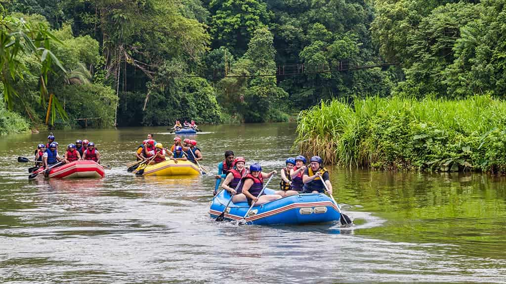

History
Founded in 2004, The Glitch Rafting Company started when a group of tech-weary
software engineers decided to trade their digital bugs for the unpredictable rushes
of the river. What began as a single, patched-up yellow raft has grown over the last
two decades into a premier whitewater outfit known for disrupting traditional
guiding styles and delivering high-energy, technically precise outdoor adventures.
Today, we continue to bridge the gap between rugged nature and calculated thrill,
ensuring every guest experiences the ultimate ride through the canyon's most
beautiful anomalies.

The Glitch Rafting Company was born out of a passion for turning unpredictable
moments into unforgettable adventures. Founded by outdoor enthusiasts who believed
that life’s
best stories happen when things don’t go perfectly according to plan, the company
embraces the
"glitch" as the ultimate catalyst for excitement.
Based on the philosophy that nature is beautifully wild and unscripted, the company
specializes in guided whitewater rafting expeditions that challenge and inspire.
From navigating
roaring class-IV rapids to drifting through serene canyons, The Glitch provides
top-tier gear, expert
guides, and a culture centered on safety, grit, and untamed fun.